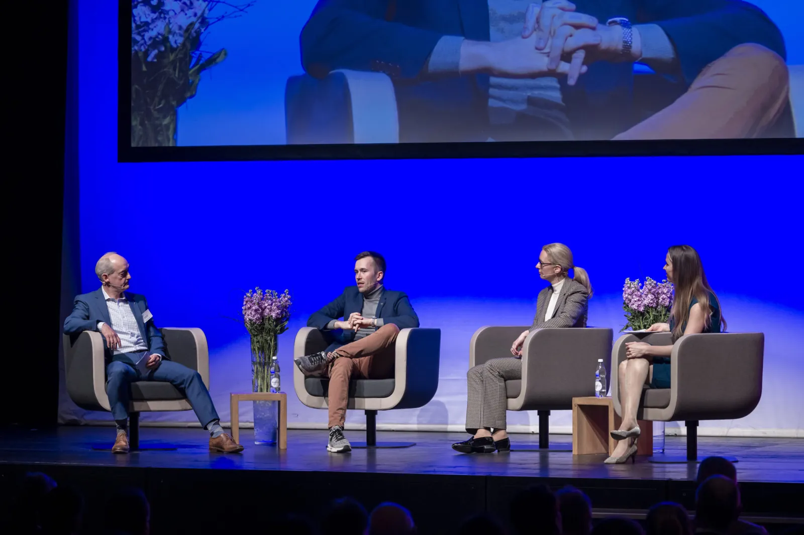

VADUZER-SAAL · VADUZ · 14 KM
Ninth edition. 450+ decision-makers, NVIDIA + ETH Zurich + Palantir on stage, half-day format ending in apéro. Theme: Global Technology Meets European Sovereignty. If you attend one event here all year, this is it.